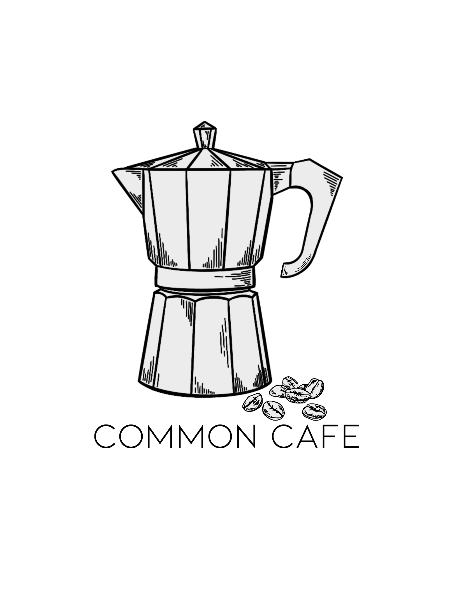

Welcome to Common Cafe
At Cafe Name, we're committed to sustainability and zero food waste. We believe that every small step we take towards being more environmentally conscious can make a big impact on the world around us.
Learn MoreAbout Us
Cafe Name is a local cafe that serves fresh, delicious food and drinks in a warm and welcoming environment. But we're more than just a cafe - we're committed to making a positive impact on the world around us by reducing our environmental footprint and eliminating food waste.
Here are some of the ways we're working towards a more sustainable future:
- We source our ingredients from local farmers and suppliers who share our commitment to sustainability.
- We use compostable or recyclable packaging for all of our takeout orders.
- We donate any unsold food to local shelters and charities, so nothing goes to waste.
- We compost all of our food waste and use it to fertilize local gardens and farms.